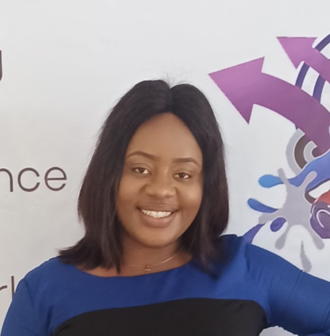
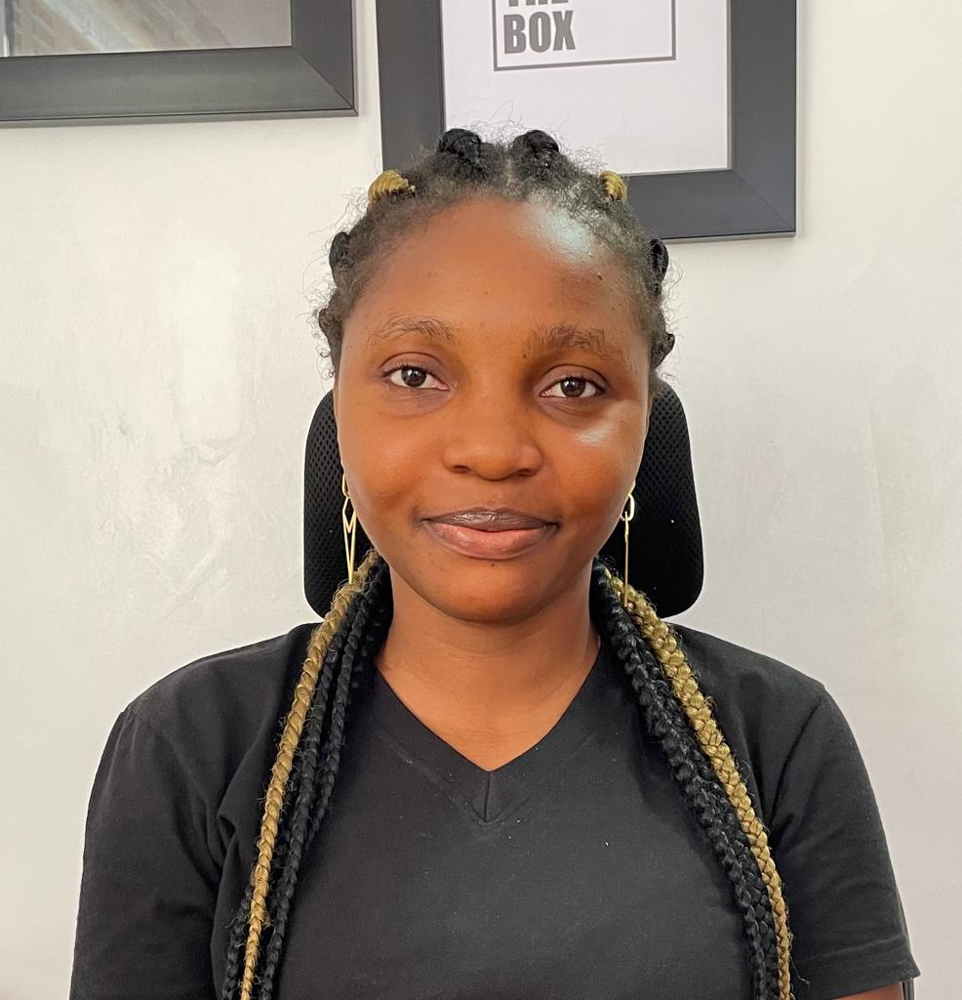
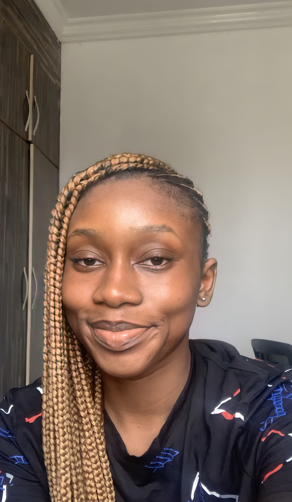
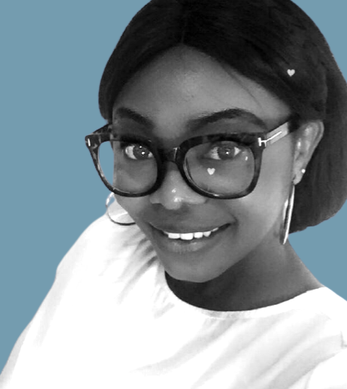
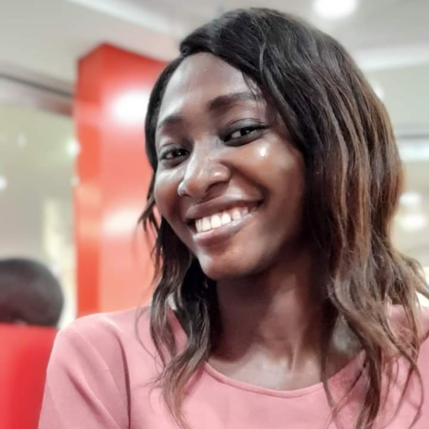

About our values
We provide support through our diverse offline and online communities. With amazing programs and initiatives to always keep you engaged, you never run out of network, resources and mentorship. We provide resources and monitor your growth every step of the way through regular check-ins to ensure you are hitting your personal and career goals. Through our intensive dedicated Mentorship program and various mentors available on our community platform, you are able to get help and guidance in your learning journey or career field whenever you need it. Network and meet with other women in tech in Africa who have walked or are walking in the same path as you are and can relate with your experience while helping you on your journey.
Our team
Ada Nduka Oyom
Founder
Chidinma Njoku
Finance Lead
Elizabeth Okaome
Operations Lead
Eniola Ipoola
Lead, Technical Facilitator
Esther Okafor
Partnerships Lead & Programs Manager, Cloud Programs
Goziem Onugha
General Counsel

Naomi Usman
Programs Manager, Chapter Programs
Oluchi Nwenyi
Editorial Team Lead
Omotola Eunice Omotayo
Lead, Community Manager
Temilola Kutelu
Engineering Team Lead
Zainab Abubakar
Open Source Programs Manager